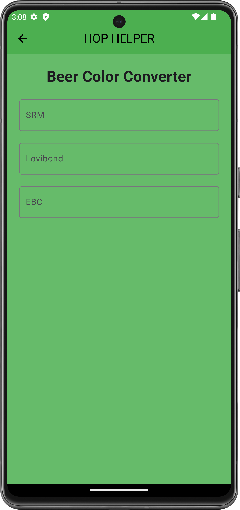

Color Converter
Tool Overview
The Color Converter is a simple yet effective tool that allows you to convert beer color values between different units commonly used by brewers: Lovibond, EBC, and SRM. These three units are industry standards for measuring beer color, and the ability to convert between them ensures consistency in your brewing process. By using HopHelper's Color Converter, you can easily adapt recipes or communicate with brewers who use different measurement systems.
Benefits of using the Color Converter include:
- Unit Consistency: Easily convert color values to match the system used in your recipes or brewing community.
- Recipe Adaptation: Quickly adjust recipes to match available ingredients or follow industry standards.
- Accurate Color Representation: Ensure that your beer color is communicated accurately, regardless of the unit used.

Key Elements on the Screen
- Lovibond Value: A text field where you enter the Lovibond value if you are converting from this unit. Lovibond is a traditional measure used mainly for malt color, but it can also be used to estimate beer color.
- EBC Value: A text field where you enter the EBC (European Brewery Convention) value if you are converting from this unit. EBC is commonly used in Europe and provides a numeric value that correlates with the color intensity of the beer.
- SRM Value: A text field where you enter the SRM (Standard Reference Method) value if you are converting from this unit. SRM is the most widely used color standard in the United States, representing the color of beer in numerical terms.
How to Use
To use the Color Converter effectively, follow these steps:
- Step 1: Enter Base Value: Enter the value of the beer color into the text field of the unit from which you are converting (e.g., Lovibond, EBC, or SRM).
- Step 2: View Converted Values: HopHelper will automatically calculate and display the equivalent values in the other two units, allowing you to understand the beer color in different measurement systems.
Additional Information
- Lovibond: The Lovibond scale was initially developed to measure the color of malts and is still used today in some contexts. It is one of the oldest color measurement systems in brewing and provides a visual reference for malt and beer color. The higher the Lovibond value, the darker the malt or beer.
- EBC (European Brewery Convention): The EBC color scale is commonly used throughout Europe and is similar to SRM. The EBC value is typically about 1.97 times the SRM value, providing a slightly more refined measurement of color intensity.
- SRM (Standard Reference Method): SRM is the most popular color standard in the United States. It represents the absorbance of a beer sample at a specific wavelength of light, providing a consistent numerical value for the beer's color. The SRM value increases with the darkness of the beer, allowing brewers to easily communicate color expectations.